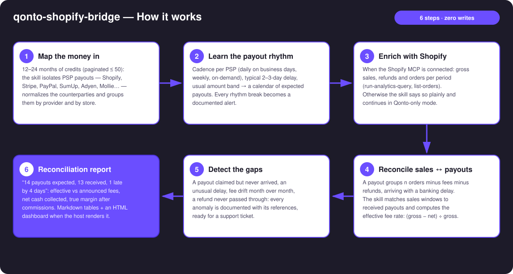
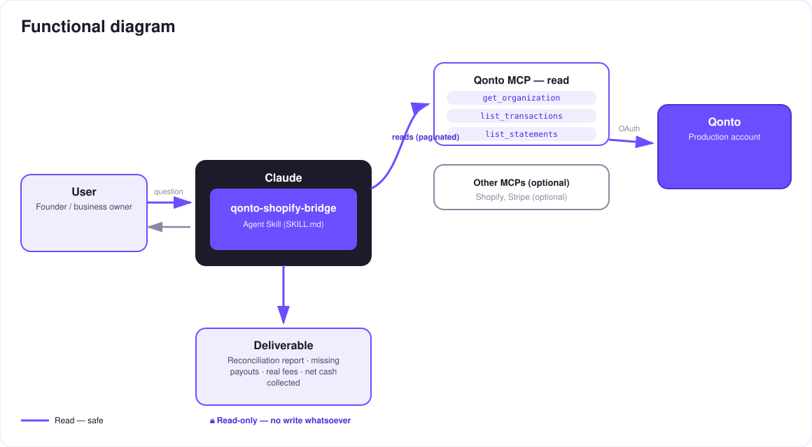

What the store claims vs what the bank collects — e-commerce payout reconciliation for your Qonto account.
Every Shopify merchant lives with the same blind spot: gross sales in the store dashboard, net payouts on the bank account — and between the two, fees, refunds and delays. Most merchants never reconcile; they just trust. This skill checks:
Each PSP's cadence (Shopify, Stripe, PayPal, SumUp…) learned from history — every break becomes an alert: missing or late payout.
Effective rate computed payout by payout: (gross − net) ÷ gross, compared to your plan's advertised rate when you provide it. No invented schedules.
Refunded in the store but never reflected on the account (or the reverse): detected, documented, referenced.
Net cash collected per period after every commission — not the flattering number on the store dashboard.
The typical report: "14 payouts expected, 13 received, 1 late by 4 days; effective fees 2.9% + €0.30, in line with the plan; net collected this month: €X". Would someone use this on a Monday morning? That's exactly when last week's payouts should have landed.
| Prerequisite | Detail | Required |
|---|---|---|
| Qonto production account | Adapts to any organization — get_organization first, nothing hardcoded | ✅ |
| Country | All Qonto countries (FR, DE, ES, IT, AT, NL, BE, PT) — payout reconciliation is universal. Multi-currency: reported per currency | ℹ️ detected |
| Qonto MCP connected | Official connector (claude.ai / Claude Desktop), OAuth login | ✅ |
| PSP inflows in the history | Identifiable SHOPIFY / STRIPE / PAYPAL / SUMUP… credits — the raw material of the Qonto-only core | ✅ |
| Shopify (or Stripe) MCP | Detected dynamically. With it: fine-grained sales ↔ payouts reconciliation. Without it: Qonto-only mode, stated plainly | ⭕ recommended |
| ≥ 3 months of PSP history | Below that: cadence announced as low-confidence | ⭕ |

settled_at — the skill matches by window, not by the date the store claims
Pure read, zero risk: no write tool, on the Qonto side or the Shopify side. The skill reads, matches, documents. The only "action" it produces is text — the support-ticket draft that only you decide to send.
| Anomaly | How | What you get |
|---|---|---|
| Missing payout | Expected from the learned cadence (and/or claimed by the store), nothing on the account past the typical delay | Support ticket draft: date, expected amount, order range, statement reference (list_statements) |
| Late payout | Arrived, but N days past the learned delay | Dated alert + delay history |
| Fee drift | Effective rate (gross − net) ÷ gross moving month over month | Trend curve, comparison against your plan's advertised rate (if provided) |
| Refund not passed through | Refunded in the store, no matching deduction on the account (or the reverse) | Case list, references from both sides |
| Manual withdrawals (PayPal) | On-demand pattern recognized | Cadence requalified — no false alarm |
| Output | Format | When |
|---|---|---|
| Conversation reply | Markdown tables (reconciliation, fees, net collected, anomalies) | Always — the baseline |
| Interactive dashboard | HTML file/artifact: payout timeline (gaps highlighted), fee-rate trend, net-per-month bars | When the host renders files (claude.ai artifacts, Claude Desktop, Claude Code); automatic fallback to tables |
| Support ticket draft | Ready-to-send text for Shopify/Stripe support, every reference included | Every time a missing payout is detected |
The ≤ 3-minute demo attached to the PR walks through: the problem (the store says X, the bank says Y) → payout rhythm in pure Qonto mode → Shopify-enriched reconciliation → the missing payout caught, support ticket ready → the final report with the true margin. It runs live on a real production store and account.
| Idea | Effort | Note |
|---|---|---|
| Stripe MCP as a second, symmetric enrichment | Low | Same logic as Shopify — dynamic detection |
| Recurring Monday-morning check ("any payout missing?") | Low | The skill is idempotent — just re-run it |
| Order-level payout breakdown (payout → exact order list) | Medium | get-order already allows it, costs extra calls |
| Net margin per product, commissions apportioned | Medium | Combines run-analytics-query + real fees |
| Consolidated multi-PSP view (Shopify + PayPal + SumUp) | Low | The Qonto-only core already does it per PSP |